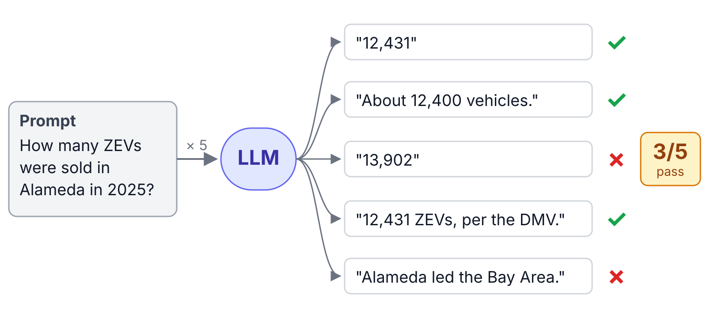

Testing
Test your code
Last Time
- Helpers automate package chores.
- Packages can store data.
- Roxygen comments make help pages.
- Load, document, check.
Key Ideas for Today
- Changes break code you already checked.
- A unit test writes down what you expect.
- Test typical inputs, edge cases, and errors.
- Turn every bug into a test.
Agenda
- Why test?
- testthat
- Choosing test cases
- Test-driven development
- Development cycle
- Testing in data analysis
Why Test?
A grade calculator
Steps
- Letter: 90+ is A, 80+ is B, 70+ is C, 60+ is D, otherwise F.
Check: Does 95 get an A? Does 42 get an F?
A grade calculator
Steps
- Letter: 90+ is A, 80+ is B, 70+ is C, 60+ is D, otherwise F.
- Add “+” if the last digit is 7 to 9, and “−” if it’s 0 to 2.
Check: Does 98 get an A+? Does 91 get an A−?
A grade calculator
Steps
- Round to the nearest whole number.
- Letter: 90+ is A, 80+ is B, 70+ is C, 60+ is D, otherwise F.
- Add “+” if the last digit is 7 to 9, and “−” if it’s 0 to 2.
Check: Does 86.5 get a B+?
A grade calculator
Steps
- Round to the nearest whole number.
- If the score is 1 or less, it’s a proportion: multiply by 100.
- Letter: 90+ is A, 80+ is B, 70+ is C, 60+ is D, otherwise F.
- Add “+” if the last digit is 7 to 9, and “−” if it’s 0 to 2.
Check: Does 0.91 get an A−?
Did we keep our promises?
Task: With a partner, run the final steps on these scores.
| Score | 100 |
58 |
42 |
0.85 |
|---|---|---|---|---|
| Should get | A+ | F | F | B |
| Gets | ? | ? | ? | ? |
01:00
Bugs come back
- Every check in the activity passed, at the moment you ran it.
- Later changes broke behavior you had already checked.
- Checking by eye happens once. A test runs every time you change the code.
Regression
A bug where a change breaks something that used to work.
Unit test
Code that runs a function on a known input and checks its output against the output you expect.
Tests as a specification
- Each test is a promise the function makes: this input gives this output.
- Writing the promise forces a decision. What should a score of 1 get?
@examplesshow users how to call a function; tests check that it still does what it promised.
testthat
Setting up: use_testthat() and use_test()
use_testthat()adds testthat toSuggestsinDESCRIPTIONand createstests/.use_test()creates a test file named for the code file it tests.
mypkg/
├── DESCRIPTION
├── R/strsplit1.R
└── tests/
├── testthat.R
└── testthat/test-strsplit1.RAnatomy of a test
tests/testthat/test-strsplit1.R
test_that()takes a description and a block of code.- The description finishes the sentence “Test that …”.
- Inside are one or more expectations: each one checks a single thing.
Expectations
| Expectation | Passes when |
|---|---|
expect_equal(x, y) |
x equals y |
expect_type(x, type) |
x has type type |
expect_length(x, n) |
x has length n |
expect_true(x) |
x is TRUE |
expect_error(code, msg) |
code errors with msg |
expect_warning(code, msg) |
code warns with msg |
Your Turn
Task: Write a test that strsplit1("a,b,c", split = ",") gives a character vector (not a list) with three elements.
02:00
Running tests with test()
✔ | 3 | strsplit1
══ Results ═════════════════════════════════════════════════════════════════════
[ FAIL 0 | WARN 0 | SKIP 0 | PASS 3 ]- Calls
load_all(), then runs every file intests/testthat/. - Counts expectations, not tests: two tests, three expectations.
check()runs the tests too.
Reading a failure
Add a test that splits on a period, then run test():
tests/testthat/test-strsplit1.R
Failure ('test-strsplit1.R:12:3'): strsplit1() splits on a period
Expected `strsplit1("3.14", split = ".")` to equal `c("3", "14")`.
`actual`: "" "" "" ""
`expected`: "3" "14"
[ FAIL 1 | WARN 0 | SKIP 0 | PASS 3 ]Choosing Test Cases
Typical inputs
- The inputs you had in mind when you wrote the function.
- For
strsplit1():"a,b,c". - Easy to write, and they catch the obvious breaks.
- But bugs live where you weren’t thinking.
Edge case
An input at the boundary of what a function handles: e.g. empty, a single value, very large, missing, or containing unusual characters.
For strsplit1:
- an empty string
- a delimiter at the start or end
- two delimiters in a row
- more than one string.
Your Turn
Question: Predict what each call returns. Which results are bugs?
02:00
Errors and warnings
Some inputs should fail. Test that they fail, and for the right reason.
- The second argument is matched against the message.
- Without it, any error passes, including a typo in your own code.
Test-Driven Development
Red, green, refactor
- Red: write a test for the behavior you want. Run it; it fails.
- Green: write the simplest code that makes it pass.
- Refactor: revise the code. The tests stay green.
Turning a bug report into a test
strsplit1(c("a,b", "c,d"), ",")returns"a" "b". Where did"c,d"go?
Red: before fixing anything, write the test.
Make it pass
Green: stop() throws an error with your message.
R/strsplit1.R
- The check fixes the bug report;
fixed = TRUEfixes the period test. - The test stays in the package, so this bug can’t come back silently.
Guess the Metaphor
A test suite is like a fortified dam: each test is a stone set where a leak once broke through. Change the code all you like; the old bugs stay behind the wall.
Development Cycle
Load, document, test, check
| Command | Does | Shortcut |
|---|---|---|
load_all() |
loads code and data | Shift + L |
document() |
rebuilds help pages | Shift + D |
test() |
runs the tests | Shift + T |
check() |
runs CRAN’s checks | Shift + E |
Shortcuts are Ctrl/Cmd + Shift + a letter in Positron/RStudio.
Testing in Data Analysis
Expectations in a cleaning script
zev_raw <- read_excel("data/raw/New_ZEV_Sales_Last_updated_07-17-2026_ada.xlsx",
sheet = "County")
zev <- zev_raw |>
rename(year = `Data Year`, quarter = Quarter, county = COUNTY,
fuel_type = FUEL_TYPE, make = MAKE, model = MODEL,
n_vehicles = `Number of Vehicles`) |>
mutate(in_state = county != "Out Of State")
# Nothing dropped; expectations still hold
stopifnot(
nrow(zev) == nrow(zev_raw),
all(zev$quarter %in% 1:4),
all(zev$n_vehicles >= 1)
)When the data are updated next quarter, a broken expectation fails loudly.
Testing an LLM

Key Ideas for Today
- Changes break code you already checked.
- A unit test writes down what you expect.
- Test typical inputs, edge cases, and errors.
- Turn every bug into a test.
For Next Time
- PS 6 released today, due 11/14.